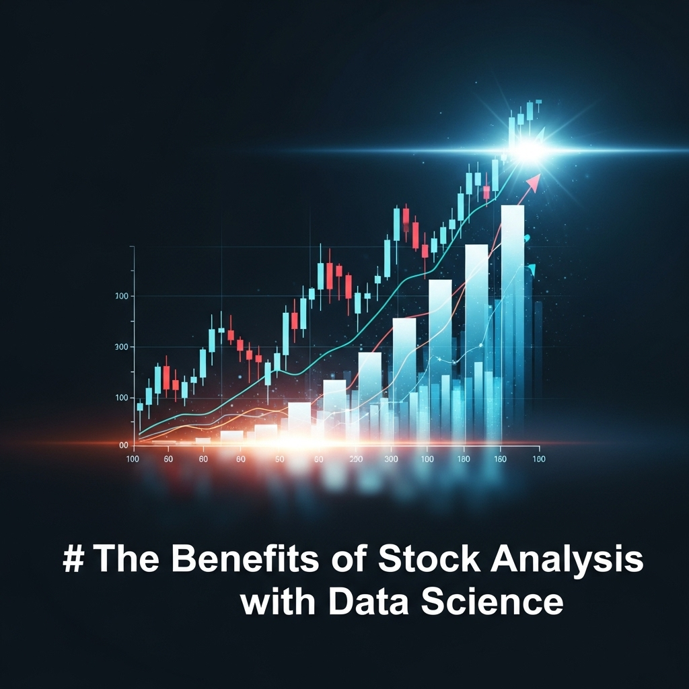
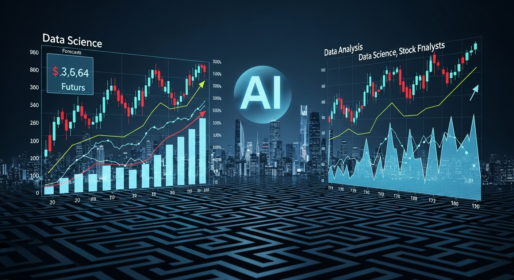
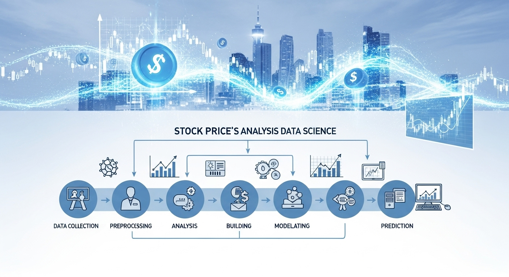

データサイエンスで株価を予測！分析手法から実践まで徹底解説
導入：新たな羅針盤を手に、株式投資の海へ
株式投資の世界は、まるで広大で、時に荒れ狂う海原のようです。多くの投資家が、富という名の宝島を目指して航海に出ますが、その道のりは決して平坦ではありません。経済ニュース、企業の業績、市場の噂、そして人々の心理――。無数の波が複雑に絡み合い、次に船がどちらへ進むべきか、正確に予測することは至難の業です。
古くからの船乗りたちが、星の位置や風向きを読んで航路を決めたように、投資家たちもまた、チャートの形を読む「テクニカル分析」や、企業の価値を測る「ファンダメンタルズ分析」といった伝統的な羅針盤を頼りにしてきました。これらは長年にわたり、多くの成功と失敗の物語の中で磨き上げられてきた、価値ある知恵の結晶です。
しかし、時代は大きく変わりました。情報技術の爆発的な発展により、私たちはかつてないほど膨大な量のデータ、いわば「ビッグデータ」の海に囲まれて生きています。日々の株価や取引量はもちろんのこと、企業の決算報告、金融ニュース、アナリストのレポート、さらにはSNS上で交わされる何気ないつぶやきまで、ありとあらゆる情報がデジタルデータとして蓄積され、リアルタイムで流れ続けています。
このビッグデータの海から、新たな航路を見つけ出すための強力な羅針盤、それが「データサイエンス」です。
データサイエンスは、統計学、数学、プログラミングといった科学的な手法を駆使して、データという名の原石から価値ある「知見」や「洞察」を掘り出す学問です。これまで人間の経験や勘に頼らざるを得なかった領域に、客観的で論理的な光を当て、より精度の高い意思決定を可能にします。
「データサイエンスで株価を予測する」と聞くと、まるで魔法のように未来が完璧に見通せる、といったイメージを抱くかもしれません。しかし、現実はもう少し複雑で、そして奥深いものです。データサイエンスは、未来を100%確定させる水晶玉ではありません。むしろ、無数の情報が渦巻く混沌とした市場の中から、確率的に優位な「パターン」や「法則性」を見つけ出し、私たちの投資判断を力強くサポートしてくれる、極めて高性能な分析ツールなのです。
この記事では、データサイエンスという新しい羅針盤を手に、株式投資という大海原を航海するための知識を、基礎から実践まで、一つひとつ丁寧に解説していきます。
- データサイエンスが、従来の株価分析とどう違うのか。
- データに基づいた投資判断には、どのようなメリットとデメリットがあるのか。
- 実際にどのような分析手法が使われているのか。
- 分析を始めるには、どのような流れで進めれば良いのか。
- そして、この分野は今後どのように進化していくのか。
専門的な内容も含まれますが、まるで隣で語りかけるように、できるだけ分かりやすく、親しみやすい言葉で解き明かしていきます。この記事を読み終える頃には、データサイエンスがあなたの投資の世界をどれほど豊かに、そして刺激的なものに変える可能性があるか、きっと感じていただけることでしょう。
さあ、一緒にデータサイエンスと株価分析の奥深い世界へ、探求の旅に出かけましょう。
データサイエンスと株価分析の基本
まずは、この旅の出発点として、「データサイエンス」とは一体何なのか、そしてそれがどのように株価分析と結びつくのか、基本的なところからゆっくりと見ていきましょう。聞き慣れない言葉に身構える必要はありません。一つひとつの概念を理解すれば、その魅力と可能性がきっと見えてくるはずです。
データサイエンスとは？株価分析への応用
「データサイエンス」という言葉を聞くと、なんだか難しそうな専門分野のように感じるかもしれませんね。しかし、その本質は非常にシンプルです。一言でいえば、「データを使って、世の中の様々な問題を解決したり、より良い意思決定をしたりするためのアプローチ」のことです。
もう少し具体的に見てみましょう。データサイエンスは、主に3つの要素が組み合わさって成り立っています。
- 統計学・数学の知識：データの背後にある法則性やパターンを見つけ出すための理論的な土台です。平均や分散といった基本的な統計量から、確率論、仮説検定など、データに意味を与えるための強力な武器となります。
- IT・プログラミングスキル：膨大なデータを効率的に収集・加工・分析するための実践的な技術です。特にPythonやRといったプログラミング言語は、データサイエンティストにとって必須のツールとなっています。
- 対象分野の専門知識（ドメイン知識）：データを分析する対象の業界や分野に関する深い理解です。例えば、医療データを分析するなら医学の知識が、そして今回のように株価を分析するなら、金融や経済に関する知識が不可欠です。
これら3つの力を融合させ、データの中から「価値ある情報（インサイト）」を引き出し、それを具体的なアクションに繋げる一連のプロセス全体が、データサイエンスなのです。
では、このデータサイエンスを株価分析に応用するとは、具体的にどういうことでしょうか。それは、「株価に関連するあらゆるデータを収集し、科学的な手法で分析することで、将来の株価の動きを予測したり、有利な投資戦略を構築したりすること」と言えます。
例えば、以下のようなアプローチが考えられます。
- 過去数十年分の株価データ（始値、高値、安値、終値、出来高）を分析し、特定のパターンが出現した後に株価が上昇しやすい、といった法則性を見つけ出す。
- 企業の財務データ（売上高、利益、資産など）と株価の相関関係をモデル化し、現在の財務状況から見て「割安」な銘柄を発見する。
- インターネット上のニュース記事やSNSの投稿を大量に分析し、特定の企業に対する世の中の評判（センチメント）を数値化。その評判の変化が株価にどう影響するかを予測する。
これらはほんの一例に過ぎません。データサイエンスの応用範囲は非常に広く、これまで人間が気づかなかったような、複雑で微細な関係性をデータの中から見つけ出す可能性を秘めているのです。まさに、金融市場という巨大なパズルを、データというピースを頼りに解き明かしていく、知的な挑戦と言えるでしょう。
株価分析におけるデータ活用の重要性
なぜ今、これほどまでに株価分析において「データ活用」が重要視されているのでしょうか。その背景には、従来の投資手法が直面している課題と、データがもたらす新たな可能性への期待があります。
かつての株式投資は、「経験」と「勘」、そして一部の専門家がアクセスできる限られた情報に大きく依存していました。もちろん、長年の経験から培われた優れた投資家の直感は、今でも非常に価値のあるものです。しかし、市場がグローバル化し、情報伝達のスピードが飛躍的に向上した現代において、それだけでは太刀打ちできない場面が増えてきました。
ここで、データ活用の重要性をいくつかの側面から考えてみましょう。
1. 客観性と再現性の確保
人間の判断は、知らず知らずのうちに感情や心理的なバイアス（偏り）の影響を受けます。「みんなが買っているから安心だ」という同調圧力や、「これだけ下がったのだから、そろそろ上がるはずだ」という希望的観測に流されて、冷静な判断ができなくなってしまうことは、誰にでも起こり得ることです。
データに基づいた分析は、こうした主観的な要素を排除し、「なぜその銘柄を買うのか」「なぜ今が売り時なのか」という判断に、客観的な根拠を与えてくれます。また、分析のプロセスが明確であるため、同じデータを使えば誰でも同じ結果を導き出すことができます（再現性）。これにより、投資判断のブレを減らし、一貫した戦略を継続することが可能になります。
2. 人間では処理不可能な情報量の活用
現代の金融市場は、情報で溢れかえっています。株価や出来高といった基本的な市場データに加え、企業の財務諸表、マクロ経済指標、為替や金利の動向、ニュースリリース、SNSの投稿、さらには衛星画像から工場の稼働状況を分析するような「オルタナティブデータ」まで、株価に影響を与えうるデータは無数に存在します。
これらの膨大な情報をすべて人間がリアルタイムで把握し、その関係性を分析することは不可能です。データサイエンスのアプローチ、特にコンピュータの計算能力を活用することで、これらの多様なデータを統合的に分析し、人間では見過ごしてしまうような微かなシグナルを捉えることができるようになります。
3. 投資戦略の検証と改善
「もし、この投資ルールに従って10年間取引していたら、どれくらいの利益が出ていただろうか？」――データを使えば、このようなシミュレーション（バックテスト）を簡単に行うことができます。自分の考えた投資戦略が過去の市場で通用したのかを客観的に評価し、その結果をもとに戦略を改善していく。この試行錯誤のサイクルを高速で回せることも、データ活用の大きなメリットです。勘や思いつきで戦略を決めるのではなく、過去のデータでその有効性を検証し、より確かな根拠を持って投資に臨むことができるのです。
このように、データ活用は、現代の株式投資において、より合理的で、より精度の高い意思決定を行うための不可欠な要素となりつつあります。それは、暗闇を手探りで進むのではなく、データという強力なライトで足元を照らしながら、着実に前に進むための知恵なのです。
データサイエンスが変える株価予測の常識
データサイエンスの登場は、私たちがこれまで持っていた「株価予測」というものに対する考え方、その常識を根底から覆す可能性を秘めています。それは、単に予測の精度が少し上がる、といった次元の話ではありません。投資という行為そのものの在り方を変え、新たな地平を切り拓くインパクトを持っているのです。
従来の株価分析は、大きく二つの潮流に分けられます。一つは、過去の株価チャートの形状から未来を予測しようとする「テクニカル分析」。もう一つは、企業の財務状況や事業内容といった本質的価値を分析し、株価が割安か割高かを判断する「ファンダメンタルズ分析」です。これらは、いわば熟練の職人が長年の経験と知識を頼りに行う、芸術的な側面も持っていました。アナリスト個人の洞察力や解釈が、分析の質を大きく左右したのです。
データサイエンスは、この世界に「科学」と「自動化」という新しい風を吹き込みました。
1. 「なぜ」から「何が」へのシフト
従来の分析が「なぜ株価が動くのか？」という因果関係の理解に重きを置いていたのに対し、データサイエンス、特に機械学習のアプローチは、「どのような条件が揃うと、株価が上がる（または下がる）傾向があるのか？」という相関関係の発見に重点を置きます。
例えば、機械学習モデルは、「特定のテクニカル指標AがXという値をとり、かつニュースのセンチメントスコアBがY以上で、さらに海外市場の指標CがZの範囲にある場合、翌日の株価は80%の確率で上昇する」といった、複雑な条件の組み合わせ（パターン）をデータから自動的に学習します。その背後にある経済学的な理論や明確な因果関係が完全には解明できなくても、予測に役立つ強力なパターンとして活用するのです。この割り切りが、人間には到底見つけられないような複雑な関係性を捉えることを可能にしています。
2. 予測から確率的判断へ
データサイエンスは、「明日のA社の株価は1,050円になる」といったピンポイントの予測を目指すものではありません。むしろ、「今後1週間で株価が5%以上上昇する確率は70%」「下落する確率は20%」といったように、未来の出来事を「確率」として捉えます。
この確率的な考え方は、投資におけるリスク管理と非常に相性が良いものです。確実な未来など誰にも分かりません。しかし、確率的に優位な状況で繰り返し賭け続けることで、長期的にはリターンを積み上げていくことができる。データサイエンスは、この考え方をシステムとして実現するための強力なツールとなります。
3. アナリストの役割の変化
データサイエンスの普及は、金融アナリストやファンドマネージャーの役割をも変えつつあります。単純なデータ収集や定型的な分析は、コンピュータやAIに任せ、人間はより高度な判断が求められる領域にシフトしています。例えば、AIが弾き出した予測結果の妥当性を評価したり、モデルでは捉えきれないような地政学リスクや技術革新といった「定性的」な情報を加味して最終的な投資判断を下したり、あるいは、そもそもどのようなデータを分析し、どのような問いを立てるかという、分析の「設計」そのものが人間の重要な役割となっています。
データサイエンスは、株価予測を一部の天才的な専門家の独壇場から、より多くの人々が科学的なアプローチで挑戦できる、開かれたフィールドへと変えようとしています。もちろん、市場の完全な予測は不可能という大原則は変わりません。しかし、データという共通言語を用いることで、私たちは市場をこれまでとは全く異なる解像度で眺め、その微細な動きの中に隠された秩序を見つけ出すことができるようになるのです。それは、投資の世界における、まさに革命的な変化と言えるでしょう。
データサイエンスで株価分析を行うメリット

データサイエンスという新しい道具を手に入れることで、私たちの投資活動にはどのような素晴らしい変化がもたらされるのでしょうか。ここでは、株価分析にデータサイエンスを活用する具体的なメリットを4つの側面に分けて、詳しく見ていきたいと思います。それは、まるで霧が晴れて視界がクリアになるような、そんな感覚に近いかもしれません。
メリット１．客観的なデータに基づいた投資判断が可能に
株式投資で最も難しいことの一つは、自分自身の「心」をコントロールすることかもしれません。市場が熱狂に包まれているときは、「この波に乗り遅れてはいけない」という焦り（FOMO: Fear of Missing Out）から高値掴みをしてしまったり、逆に市場が悲観に沈んでいるときは、「もっと下がるかもしれない」という恐怖から、絶好の買い場を逃してしまったり。こうした感情的な判断は、しばしば合理的な意思決定を妨げ、思わぬ損失に繋がることがあります。
データサイエンスは、この人間特有の弱さを克服するための強力な味方となります。なぜなら、その判断の根拠が、個人の感情や主観的な期待ではなく、冷徹で客観的な「データ」そのものになるからです。
例えば、あなたが「A社の株は、PER（株価収益率）が15倍以下になったら買う」という投資ルールを立てたとします。データサイエンスを活用すれば、このルールをプログラムとして記述し、A社の株価と業績データを常に監視させることができます。そして、条件が満たされた瞬間に、アラートを出す、あるいは自動で買い注文を出す、といったことが可能になります。そこには、「もう少し待てばもっと下がるかも…」といった感情が入り込む余地はありません。ルールに従って、淡々と実行されるだけです。
さらに、このルールの有効性自体も、データを使って客観的に検証することができます。「過去10年間、このルールに従って取引していたら、どのくらいの利益が出ていたのか？」というバックテストを行うことで、その戦略が本当に優位性のあるものなのかを、実際の取引を始める前に確認できるのです。もし結果が思わしくなければ、ルールを修正し、再度バックテストを行う。このPDCA（Plan-Do-Check-Act）サイクルを回すことで、戦略を継続的に改善していくことができます。
このように、データサイエンスは、投資判断のプロセスから曖昧さを排除し、すべてを明確な数値とロジックに基づいたものへと変えてくれます。それは、当てずっぽうの航海ではなく、緻密な海図と正確なコンパスを頼りに進む航海のようなものです。もちろん、嵐（予期せぬ市場の急変）に見舞われることもありますが、少なくとも自分の現在地と進むべき方向が明確であるという安心感は、長期的に投資を続けていく上で、計り知れないほどの精神的な支えとなるでしょう。
メリット２．複雑な市場動向からパターンを発見
人間の脳は、非常に優れたパターン認識能力を持っています。人の顔を見分けたり、文章の意味を理解したりするのは、その代表例です。しかし、その能力には限界もあります。特に、何十、何百という多数の変数が複雑に絡み合って生み出される現象の中から、意味のあるパターンを見つけ出すことは、人間にとって非常に困難な作業です。
金融市場は、まさにそのような「高次元」で「複雑」な世界の典型例です。ある企業の株価は、その企業の業績だけでなく、金利、為替、原油価格、景気動向、競合他社の状況、政治的な出来事、投資家心理など、数えきれないほどの要因の影響を受けて変動します。これらの要因が、それぞれどのように、そしてどの程度株価に影響を与えているのかを、人間の頭の中だけで正確に把握することは、ほぼ不可能です。
ここに、データサイエンス、特に機械学習の真価が発揮されます。機械学習アルゴリズムは、人間が一度に見渡せる3つや4つの変数ではなく、何百、何千という変数を同時に考慮し、それらの間に存在する非線形で複雑な関係性を粘り強く探し出すことができます。
例えば、以下のような、人間では到底気づけないようなパターンを発見する可能性があります。
- 「ドル円の為替レートが特定の範囲で安定し、かつハイテク株指数のボラティリティ（変動率）が低下し、さらに特定のキーワードを含むニュースが前日比で20%以上増加した場合、3日後に半導体セクターの株価が平均2%上昇する傾向がある」
このようなパターンは、明確な経済学的な理由付けが難しいかもしれません。しかし、データ上、統計的に有意な関係性が存在するのであれば、それは予測のための有効なシグナルとなり得ます。機械学習は、このような「アノマリー」と呼ばれる、従来の理論では説明しきれない市場の微細な歪みや法則性を発見するのに非常に長けているのです。
これは、まるで無数の星々が輝く夜空を眺めているようなものです。肉眼では、いくつかの星座を認識するのが精一杯かもしれません。しかし、高性能な天体望遠鏡（データサイエンス）を使えば、これまで見えなかった遠くの銀河や星雲の存在、そしてそれらが織りなす壮大な宇宙の構造（市場の隠れたパターン）を垣間見ることができるのです。この能力は、競争の激しい市場において、他者よりも一歩先んじるための強力なアドバンテージとなり得ます。
メリット３．感情に左右されない効率的な意思決定
投資の世界で成功を収めるためには、優れた分析能力だけでなく、強靭な精神力も必要とされます。なぜなら、私たちのお金が直接かかっているからです。株価が上昇すれば有頂天になり、下落すれば絶望的な気分になる。この感情の揺さぶりは、時に私たちの判断を大きく狂わせます。
行動経済学の分野では、人間がいかに非合理的な意思決定を行うかを示す、多くの心理バイアスが知られています。
- プロスペクト理論：人々は、利益を得る喜びよりも、同額の損失を被る苦痛をより大きく感じる傾向があります。そのため、利益が出ている株はすぐに売ってしまう（利食いが早い）一方で、損失が出ている株は「いつか戻るはずだ」と塩漬けにしてしまいがちです（損切りが遅い）。
- 確証バイアス：自分が信じたい情報ばかりを集め、それに反する情報を無視・軽視してしまう傾向です。「この会社は絶対に成長する」と信じ込んでいると、その会社にとって都合の悪いニュースには目をつむり、ポジティブな情報ばかりを探してしまいます。
- アンカリング効果：最初に提示された情報（アンカー）に、その後の判断が強く影響されてしまう現象です。例えば、「以前は1株1万円だった」という記憶が頭にあると、5,000円まで下がった株を「割安だ」と錯覚してしまい、企業の現状を冷静に評価できなくなることがあります。
これらの心理的な罠は、どれだけ知識や経験を積んだ投資家であっても、完全に逃れることは困難です。
データサイエンスに基づいたシステマティックなアプローチは、こうした感情の介入を物理的に遮断する効果があります。あらかじめ定められたルールに基づき、コンピュータが取引のシグナルを生成するため、その場の雰囲気や気分で判断がブレることがありません。
「損失が購入価格から10%に達したら、機械的に損切りする」
「特定のテクニカル指標がゴールデンクロスしたら、躊躇なく買いを入れる」
このようなルールを徹底することで、プロスペクト理論の罠を回避し、一貫性のある取引を継続できます。また、分析の対象とするデータや指標も事前に定義されているため、自分の信念に都合の良い情報だけをつまみ食いする、といった確証バイアスも働きにくくなります。
もちろん、投資戦略そのものを構築するのは人間であり、そのプロセスには人間の思考や判断が介在します。しかし、一度戦略が固まり、運用のフェーズに入れば、その実行を感情のないコンピュータに委ねることで、意思決定のプロセスを大幅に効率化し、精神的な負担を大きく軽減することができるのです。これは、長期にわたって市場と向き合い続ける上で、非常に大きなメリットと言えるでしょう。
メリット４．投資戦略の自動化・最適化への可能性
データサイエンスがもたらすメリットの究極的な形は、投資戦略の「自動化」と「最適化」にあると言っても過言ではありません。これは、単に取引の執行を自動化するというレベルに留まりません。戦略の発見から検証、実行、そして改善まで、投資に関わる一連のプロセス全体を、より高度なレベルでシステム化していく可能性を秘めています。
投資戦略の自動化
データサイエンスを活用して有効な予測モデルや取引ルールを構築できれば、それをプログラムに組み込み、24時間365日、市場を監視させることが可能です。そして、あらかじめ設定した条件が満たされた瞬間に、人間の手を介さずに自動で売買注文を実行する「アルゴリズム取引」や「システムトレード」を実現できます。
これには、以下のような大きな利点があります。
- スピード：コンピュータは、人間とは比較にならない速度で判断し、注文を出すことができます。特に、短期的な価格変動を捉える戦略においては、このスピードの差が収益を大きく左右します。
- 機会損失の防止：仕事中や睡眠中など、市場を見ていられない時間帯に発生した絶好の取引チャンスを逃すことがありません。
- 多銘柄への対応：人間が同時に監視できる銘柄数には限りがありますが、コンピュータであれば何百、何千という銘柄を同時に監視し、それぞれの銘柄に最適な戦略を適用することも可能です。
投資戦略の最適化
さらに、データサイエンスは、既存の戦略をより良いものへと「最適化」するための強力なツールとなります。
例えば、移動平均線を使った取引戦略を考えてみましょう。短期と長期、2本の移動平均線のクロスを売買のサインとしますが、この「短期」と「長期」をそれぞれ何日間に設定するのが最もパフォーマンスが良くなるのでしょうか。5日と25日？ 10日と50日？
データサイエンスのアプローチを使えば、考えられる無数のパラメータの組み合わせをコンピュータに計算させ、過去のデータで最も利益が大きくなった（あるいはリスクが小さくなった）最適な組み合わせを自動的に見つけ出すことができます。
また、複数の投資戦略を組み合わせた「ポートフォリオ」全体の最適化も可能です。異なる戦略（例えば、長期的な成長株投資と短期的な逆張り戦略）をどのような比率で組み合わせれば、リスクを抑えつつリターンを最大化できるのか。これは、金融工学の分野で「ポートフォリオ最適化問題」として知られていますが、データサイエンスの技術を用いることで、より現実に即した、複雑な条件下での最適解を探索することができるようになります。
このように、データサイエンスは、私たちの投資活動を、一度きりの職人技から、継続的に改善・進化させていくことができる「工学的なシステム」へと昇華させる可能性を秘めています。それは、投資家を日々の煩雑な作業から解放し、より創造的で、本質的な戦略立案に集中させてくれる、未来の投資スタイルへの扉を開く鍵となるのです。
データサイエンスを株価分析に活用する際のデメリット

データサイエンスが株価分析に多くのメリットをもたらす一方で、その活用にはいくつかの課題や注意すべき点、いわば「デメリット」も存在します。光が強ければ影もまた濃くなるように、その強力な能力の裏側にある現実的な困難を理解しておくことは、この技術と正しく付き合っていく上で非常に重要です。ここでは、4つの側面からそのデメリットを掘り下げていきましょう。
デメリット１．高度な専門知識とスキルが必要
データサイエンスは、誰でも気軽に始められる魔法の杖ではありません。その恩恵を十分に受けるためには、多岐にわたる高度な専門知識と実践的なスキルを習得する必要があります。これは、多くの人にとって最初の、そして最も大きなハードルとなるかもしれません。
具体的には、以下のような分野の知識が求められます。
- 数学・統計学：データ分析の根幹をなす理論的な知識です。平均、分散、標準偏差といった基本的な統計学の概念はもちろん、確率分布、仮説検定、回帰分析、時系列分析など、より高度なトピックへの理解が不可欠です。これらの理論を知らなければ、分析結果を正しく解釈したり、モデルの限界を理解したりすることができません。
- プログラミング：データをコンピュータで扱うための必須スキルです。特に、データサイエンスの分野で広く使われているPythonやRといったプログラミング言語に習熟する必要があります。単にコードが書けるだけでなく、データ収集（API、スクレイピング）、データ加工・整形（Pandas, NumPy）、モデル構築（Scikit-learn, TensorFlow, PyTorch）、可視化（Matplotlib, Seaborn）など、目的に応じたライブラリやフレームワークを使いこなす能力が求められます。
- 機械学習・AI：線形回帰やロジスティック回帰といった基本的なモデルから、決定木、ランダムフォレスト、サポートベクターマシン、さらにはニューラルネットワークや深層学習（ディープラーニング）といった、より複雑なアルゴリズムの仕組みを理解し、適切に選択・実装する知識が必要です。それぞれのモデルがどのようなデータに適しているのか、どのようなパラメータを設定すべきなのかを判断するには、相応の学習と経験が欠かせません。
- 金融・経済の知識：分析対象である株式市場や金融商品に関する深い理解、いわゆる「ドメイン知識」も不可欠です。PERやPBRといったファンダメンタルズ指標の意味、テクニカル分析で使われる各種指標の計算方法、金融市場の仕組みや歴史、投資家心理に影響を与えるマクロ経済の動向など、幅広い知識がなければ、そもそもどのようなデータを分析すべきか、分析結果が何を意味するのかを正しく判断することができません。
これらの知識をすべて一人でマスターするのは、決して容易なことではありません。学習には多くの時間と労力がかかりますし、常に進化し続ける技術を追いかけ続けるための継続的な努力も必要です。この「学習コストの高さ」が、データサイエンスを株価分析に活用する上での大きな参入障壁となっていることは間違いありません。
デメリット２．データの質と量に依存する予測精度
データサイエンスの世界には、「Garbage In, Garbage Out（ゴミを入れれば、ゴミしか出てこない）」という有名な格言があります。これは、どれほど高度で洗練された分析モデルを使ったとしても、元となるデータの質が悪ければ、得られる結果もまた信頼性のない無価値なものになってしまう、ということを端的に表しています。株価分析においても、この原則は極めて重要です。
データの質の問題
予測モデルの精度は、使用するデータの「質」に大きく左右されます。例えば、以下のような問題が考えられます。
- 欠損値・異常値：株価データの中に、何らかの理由で値が抜けている部分（欠損値）があったり、明らかに誤った値（異常値）が混入していたりすることがあります。これらを適切に処理しなければ、分析結果が大きく歪んでしまいます。
- データの正確性：特に、企業の財務データやニュース記事などの非構造化データは、その情報源によって内容が異なっていたり、誤りが含まれていたりする可能性があります。不正確なデータに基づいてモデルを学習させれば、当然ながら誤った予測を生み出してしまいます。
- バイアス：使用するデータに偏りがある場合も問題です。例えば、好景気の時期のデータばかりを使ってモデルを学習させると、そのモデルは不況期の市場の動きをうまく予測できないかもしれません。また、特定の業界や大型株のデータに偏っていると、他のセクターや小型株には通用しないモデルが出来上がってしまいます。
データの量の問題
一般的に、機械学習モデル、特に深層学習のような複雑なモデルは、その性能を発揮するために大量のデータを必要とします。データの量が少ないと、モデルはデータの中に存在する本質的なパターンを十分に学習することができず、予測精度が上がらない、あるいは、学習データにだけ過剰に適合してしまう「過学習（Overfitting）」という問題を引き起こしやすくなります。
高品質なデータを、長期にわたって、十分な量、継続的に入手することは、実は非常に困難でコストのかかる作業です。信頼性の高い金融データを提供している専門のデータベンダーから購入する場合、個人では負担しきれないほどの高額な費用がかかることも少なくありません。無料で入手できるデータもありますが、その品質や網羅性には限界があることが多いのが実情です。
このように、予測モデルの性能は、分析者のスキルだけでなく、その手元にある「データの質と量」という、いわば土台の部分に大きく依存します。この土台が脆弱であれば、その上にどんな立派な建物を建てようとしても、砂上の楼閣に過ぎなくなってしまうのです。
デメリット３．市場の非効率性や予測困難性
データサイエンスは強力なツールですが、万能ではありません。特に、金融市場という極めて複雑で、人間の心理が深く関わるシステムを相手にする場合、その予測能力には本質的な限界が存在します。
効率的市場仮説
金融経済学には、「効率的市場仮説」という有名な考え方があります。これは、「市場は効率的であり、入手可能なすべての情報は、即座に株価に織り込まれる」という仮説です。もしこの仮説が完全に正しいとすれば、過去の株価の動きや公開されている情報から、将来の株価を予測して利益を上げることは不可能、ということになります。なぜなら、予測に使えるような有益な情報は、すでに現在の株価に反映されてしまっているからです。この考え方によれば、株価の変動は、新たに発生した予測不可能なニュースに反応するだけであり、その動きはランダムウォーク（酔っ払いの千鳥足）のようになり、過去のデータから未来を予測することはできない、とされます。
もちろん、現実の市場が完全に効率的であるかどうかについては、多くの議論があります。しかし、世界中の優秀な頭脳と高性能なコンピュータが利益機会を探し求めている現代の市場が、非常に「効率的」に近い状態にあることは事実でしょう。データサイエンスによって見つけ出された優位性（アルファ）も、多くの市場参加者に知れ渡れば、やがては消滅してしまう運命にあります。
ブラック・スワン・イベント
市場は、過去のデータからは全く予測できない、突発的で、かつ甚大な影響を及ぼす出来事（ブラック・スワン・イベント）に時として見舞われます。例えば、大規模な金融危機、パンデミック、戦争、自然災害などがこれにあたります。
データサイエンスの予測モデルは、あくまで過去のデータの中に存在するパターンを学習するものです。そのため、過去に一度も経験したことのない、前例のない出来事に対しては、全く無力であると言えます。むしろ、平時の市場データで最適化されたモデルは、このような異常事態において、かえって大きな損失を生み出す危険性すらあります。
非定常性
市場の構造やルール、参加者の行動パターンは、時間とともに変化していきます。これを「非定常性」と呼びます。例えば、取引アルゴリズムの進化、新たな金融商品の登場、規制の変更などによって、過去には有効だったはずの法則性が、現在では全く通用しなくなってしまう、ということが頻繁に起こります。
過去のデータで完璧に機能するモデルを作ったとしても、それが未来永劫にわたって機能し続ける保証はどこにもありません。モデルの性能は時間とともに劣化していくため、常に市場の変化を監視し、モデルを定期的に見直し、再学習させていく必要があります。
これらの要因から、株価を「完全に」「常に」予測することは、データサイエンスをもってしても原理的に不可能である、ということを肝に銘じておく必要があります。過度な期待は禁物であり、あくまで確率的な優位性を追求するツールとして、その限界を理解した上で活用することが求められます。
デメリット４．リアルタイム分析環境の構築コスト
バックテストで有効な戦略が見つかったとしても、それを実際の投資で活用するためには、リアルタイムで市場データを取得し、分析モデルを動かし、取引のシグナルを生成するための「環境」を構築・維持する必要があります。そして、これには相応のコストがかかります。
インフラストラクチャのコスト
リアルタイム分析を行うためには、まず安定した高性能なコンピュータ（サーバー）が必要です。24時間稼働させることを考えると、自宅のPCではなく、クラウドサービス（AWS, GCP, Azureなど）を利用するのが一般的ですが、これには月々の利用料が発生します。
また、リアルタイムの株価データを取得するための高速なインターネット回線や、証券会社の取引システムにAPI経由で接続するための環境も必要になります。特に、ミリ秒単位の遅延が収益に影響するような高頻度取引（HFT）の世界では、取引所の近くにサーバーを設置する「コロケーション」など、莫大なインフラ投資が行われています。個人投資家がそこまで行うのは現実的ではありませんが、ある程度のレベルのリアルタイム分析であっても、ハードウェアやネットワークに関するコストは無視できません。
データのコスト
先にも述べましたが、リアルタイムで配信される高品質な金融データは、非常に高価です。特に、板情報（気配値）のような詳細なデータや、複数の市場のデータを網羅的に入手しようとすると、そのコストは月額で数万円から数十万円、あるいはそれ以上になることも珍しくありません。無料のAPIもありますが、配信遅延があったり、取得できるデータ量に制限があったりするため、本格的なリアルタイム分析には不向きな場合があります。
開発・メンテナンスのコスト
リアルタイム分析システムは、一度作ったら終わり、というものではありません。市場のデータ形式の変更、証券会社のAPIの仕様変更、利用しているソフトウェアのアップデートなど、外部環境の変化に対応し続ける必要があります。また、システムが正常に稼働しているかを常に監視し、障害が発生した際には迅速に対応しなければなりません。
これらの開発やメンテナンスには、プログラミングやインフラ管理の高いスキルが求められます。もし自分で対応できない場合は、外部の専門家に依頼することになりますが、その場合は当然ながら人件費というコストが発生します。
これらの金銭的・時間的なコストは、特に個人投資家にとっては大きな負担となり得ます。データサイエンスを用いた株価分析は、単に分析手法を学ぶだけでなく、それを動かすための「土台」を整えることの難しさとコストも考慮に入れなければならない、総合的な挑戦なのです。
株価予測に活用されるデータサイエンスの手法
さて、ここからは、実際にデータサイエンスの世界で株価を予測・分析するために、どのような「手法」が使われているのか、具体的な道具箱の中身を覗いてみることにしましょう。それぞれの手法には得意なこと、不得意なことがあります。それらの特徴を理解することで、どのような問題にどの手法を適用すれば良いのか、より深く理解できるようになるはずです。
手法１．時系列分析（ARIMA、Prophetなど）
時系列分析は、その名の通り、「時間の経過とともに記録されたデータ（時系列データ）」を分析するための、古くからある統計的な手法群です。株価はまさに時系列データの典型例であり、この手法は株価分析の基本中の基本と言えます。
時系列分析の根底にある考え方は、「未来は過去の延長線上にある」というものです。つまり、データ自身の過去の動きの中に存在するパターンを見つけ出し、そのパターンが将来も続くと仮定して未来を予測します。具体的には、データに含まれる以下の3つの要素を捉えようとします。
- トレンド（Trend）：長期的な上昇・下降の傾向。
- 季節性（Seasonality）：特定の周期（週、月、年など）で繰り返される変動パターン。「アノマリー」と呼ばれる、特定の月に株価が上がりやすい、といった現象もこれに含まれます。
- 残差（Residual）：トレンドや季節性では説明できない、不規則な変動。
この時系列分析の中でも、代表的なモデルがいくつかあります。
ARIMA（アリマ）モデル
ARIMA（AutoRegressive Integrated Moving Average）モデルは、古典的でありながら今なお強力な時系列予測モデルの一つです。名前が少し難しそうですが、3つの要素から成り立っています。
- AR (AutoRegressive) モデル / 自己回帰モデル：「今日の値は、昨日の値に似ているだろう」という考え方。過去の自分自身の値を使って、現在の値を説明・予測します。
- MA (Moving Average) モデル / 移動平均モデル：「今日の予測誤差は、昨日の予測誤差に似ているだろう」という考え方。過去の予測誤差を使って、現在の値を修正していきます。
- I (Integrated) / 和分：データのトレンドを取り除くための処理です。今日の値から昨日の値を引き算する（階差をとる）ことで、データの変動を安定させ、分析しやすくします。
ARIMAモデルは、これらの要素を組み合わせることで、データの持つ内部構造をうまく捉え、統計的に精度の高い予測を行うことができます。ただし、モデルを適用するためには、パラメータ（AR、I、MAの次数）を専門的な知識に基づいて設定する必要があり、初心者には少し扱いが難しい側面もあります。
Prophet（プロフェット）
Prophetは、Facebook（現Meta）が開発した時系列予測のためのライブラリです。ARIMAのような伝統的なモデルが持つ課題、特にパラメータ設定の難しさや、ビジネス現場でよく見られる特殊なイベント（祝日やセールなど）への対応のしにくさを解決することを目指して作られました。
Prophetの大きな特徴は、以下の通りです。
- 使いやすさ：専門的な知識がなくても、直感的にモデルを構築し、予測を行うことができます。数行のコードで、精度の高い予測結果と、その内訳（トレンド、週周期、年周期など）を可視化してくれます。
- 柔軟性：祝日や特定のイベントの効果を簡単にモデルに組み込むことができます。例えば、「年末商戦の時期は株価が上がりやすい」といったビジネス上の知見を、カスタムの季節性として追加することが可能です。
- 頑健性：欠損値や外れ値にも比較的強く、実社会の不完全なデータにも対応しやすいように設計されています。
時系列分析は、株価そのものだけでなく、出来高やボラティリティといった他の時系列データの予測にも応用できます。まずはこれらの手法でデータ自身の持つ「クセ」を掴むことが、より高度な分析への第一歩となります。
手法２．機械学習モデル（回帰、分類）
時系列分析がデータ自身の過去の動きだけに着目するのに対し、機械学習モデルは、より多様な情報（説明変数）を使って、未来の値（目的変数）を予測しようと試みます。株価という一つの現象を、様々な角度から説明しようとするアプローチと言えるでしょう。
このアプローチは、大きく「回帰」と「分類」の2つのタスクに分けられます。
回帰（Regression）
回帰は、「翌日の終値はいくらになるか？」や「1ヶ月後の株価収益率は何%になるか？」といった、連続的な数値を予測するタスクです。
- 目的変数：予測したい数値（例：翌日の終値、株価の変動率）
- 説明変数：予測の材料となるデータ（例：当日の始値・高値・安値・終値、出来高、移動平均線、RSIなどのテクニカル指標、PERやPBRなどのファンダメンタルズ指標、為替レート、金利など）
モデルは、これらの説明変数が目的変数にどのように影響を与えるのか、その関係性を大量の過去データから学習します。代表的な回帰モデルには、以下のようなものがあります。
- 線形回帰モデル：最も基本的なモデルで、説明変数と目的変数の関係を直線的な式で表します。解釈がしやすいという利点がありますが、複雑な市場の動きを捉えるには力不足なことが多いです。
- ランダムフォレスト：「決定木」という単純な予測モデルをたくさん作り、それらの予測結果を多数決（平均）でまとめることで、より精度の高い予測を目指す手法です。過学習しにくく、安定した性能を発揮することが多いです。
- 勾配ブースティング（Gradient Boosting）：XGBoostやLightGBMといったライブラリが有名です。決定木を順番に作っていく際に、前の木が間違えた部分を次の木が重点的に学習するようにすることで、モデル全体を段階的に強化していく手法です。非常に高い予測精度を誇り、データ分析コンペティションなどでも頻繁に使われます。
分類（Classification）
分類は、「明日の株価は、今日より上がるか、下がるか？」や「来週、株価は5%以上上昇するか、しないか？」といった、いくつかのカテゴリ（クラス）のどれに属するかを予測するタスクです。具体的な数値を当てるのではなく、方向性を当てる問題と捉えることができます。
- 目的変数：予測したいカテゴリ（例：「上昇」「下落」「横ばい」の3クラス）
- 説明変数：回帰と同様、予測の材料となる様々なデータ。
株価の正確な値を予測するのは非常に困難ですが、「上がるか下がるか」の2択であれば、少しは当てやすくなるかもしれません。このアプローチは、実際の投資判断（買うか、売るか、何もしないか）に直結しやすいという利点があります。代表的な分類モデルには、以下のようなものがあります。
- ロジスティック回帰：線形回帰を分類問題に応用したもので、ある事象が発生する「確率」を予測します。
- サポートベクターマシン（SVM）：各クラスのデータを最も明確に分離する境界線を見つけ出すことで、分類を行う手法です。
- ランダムフォレストや勾配ブースティング：これらの手法は、回帰だけでなく分類問題にも非常に強力です。
これらの機械学習モデルを使うことで、単一の時系列データだけでは見えなかった、様々な要因が絡み合った複雑な関係性を捉え、より多角的な視点から株価を分析することが可能になります。
手法３．自然言語処理（ニュース、SNS分析）
株価は、数値データだけで動いているわけではありません。企業の決算発表、新製品のニュース、アナリストのレポート、中央銀行総裁の発言、そしてSNS上で飛び交う人々の期待や不安。こうした「言葉」で表現される情報が、投資家心理を動かし、株価に大きな影響を与えることは、皆さんも日々感じていることでしょう。
自然言語処理（NLP: Natural Language Processing）は、私たちが日常的に使っている言葉（自然言語）をコンピュータに理解させ、分析するための技術です。この技術を株価分析に応用することで、これまで数値化が難しかった「市場のセンチメント（雰囲気や感情）」をデータとして捉え、予測モデルに組み込むことができるようになります。
センチメント分析
センチメント分析は、文章がポジティブな内容か、ネガティブな内容か、あるいは中立的な内容かを判定する技術です。例えば、以下のような応用が考えられます。
- ニュース分析：特定の企業に関するニュース記事を大量に収集し、それぞれの記事がその企業に対して好意的（ポジティブ）か、批判的（ネガティブ）かを自動でスコアリングします。ポジティブなニュースが増加すれば株価上昇のサイン、ネガティブなニュースが増えれば下落のサイン、といった仮説を立て、検証することができます。
- SNS分析：Twitter（現X）などのSNSから、特定の銘柄コード（例: `$AAPL`）を含む投稿をリアルタイムで収集します。そして、それらの投稿に含まれる感情（喜び、怒り、期待、不安など）を分析し、市場全体のセンチメントの盛り上がりや冷え込みを指数化します。この指数が急上昇したときは、相場が過熱しているサインかもしれません。
- 決算短信・アニュアルレポート分析：企業が発表する長文のレポートから、経営者が使う言葉のトーンを分析します。例えば、前年のレポートと比較して、「リスク」や「不確実性」といったネガティブな単語が増えていないか、あるいは「成長」や「革新」といったポジティブな単語がどれだけ使われているかを定量化し、企業の将来に対する自信度を測る指標とすることができます。
トピックモデリング
トピックモデリングは、大量の文章データの中から、どのような「話題（トピック）」が議論されているのかを自動的に抽出する技術です。金融ニュース全体を分析することで、「現在、市場では『インフレ懸念』と『AI技術の発展』という2つのトピックが大きな関心を集めている」といったことを把握できます。そして、特定のトピックの注目度が、どの業種の株価と相関が高いのかを分析することで、新たな投資機会を発見できる可能性があります。
これらの自然言語処理技術は、AI、特に近年の大規模言語モデル（LLM）の発展によって、その精度を飛躍的に向上させています。数値データだけでは捉えきれない、市場の「空気感」や「人々の心理」という、もう一つの重要な側面を分析するための強力な武器となりつつあるのです。
手法４．深層学習（LSTM、RNNなど）
深層学習（ディープラーニング）は、人間の脳の神経回路網（ニューラルネットワーク）の仕組みにヒントを得た、機械学習の一分野です。多層に重ねられたニューラルネットワークを用いることで、従来の機械学習モデルでは捉えきれなかった、非常に複雑で抽象的なデータのパターンを自動で学習することができます。画像認識や音声認識、そして自然言語処理の分野で革命的な成果を上げていますが、株価のような時系列データの予測においても、その強力な表現力が注目されています。
特に、時系列データの分析でよく用いられるのが、「再帰型ニューラルネットワーク（RNN: Recurrent Neural Network）」とその発展形です。
RNN（再帰型ニューラルネットワーク）
通常のニューラルネットワークは、入力されたデータに対して一方向的に処理を行い、結果を出力します。しかし、時系列データの場合、「過去のデータがどうであったか」という文脈が、現在の値を理解する上で非常に重要になります。
RNNは、ネットワークの内部に「ループ構造」を持つことで、過去の情報を記憶し、それを現在の予測に活かすことができるように設計されています。まるで、文章を読むときに、前の単語の意味を記憶しながら次の単語を理解していくようなものです。この仕組みにより、データの「時間的な順序」や「文脈」を考慮した予測が可能になります。
LSTM（長短期記憶 / Long Short-Term Memory）
RNNは過去の情報を記憶できるという利点がありますが、時間が経つにつれて古い情報を忘れてしまう「長期依存性の問題」という弱点がありました。例えば、数週間前の重要な経済指標の発表が、今日の株価に影響を与えている、といった長期的な関係性を学習するのが苦手だったのです。
LSTMは、このRNNの弱点を克服するために考案されたモデルです。ネットワークの内部に「ゲート」と呼ばれる、情報の取捨選択を行うための巧妙な仕組みを持っています。このゲートが、「どの情報を記憶し続け、どの情報を忘れ、どの情報を出力に使うか」をデータから自動的に学習します。これにより、短期的な記憶と長期的な記憶をうまく使い分け、より複雑な時系列のパターンを捉えることができるようになりました。
深層学習の応用例
深層学習を株価予測に応用する場合、様々なデータを組み合わせて入力とすることができます。
- 過去の株価（始値、高値、安値、終値）やテクニカル指標の時系列データをLSTMに入力し、未来の株価を予測する。
- 数値データだけでなく、ニュース記事のセンチメントスコアの時系列データも同時にLSTMに入力し、より多角的な情報から予測を行う（マルチモーダル学習）。
- CNN（畳み込みニューラルネットワーク）という、本来は画像認識で使われるモデルを応用し、株価チャートの「形状」そのものを画像として学習させ、パターン認識を行う。
深層学習は、非常に高い表現力を持つ一方で、モデルの構造が複雑で「ブラックボックス」になりやすい（なぜその予測結果になったのかの解釈が難しい）、大量のデータと高い計算能力を必要とする、過学習に陥りやすい、といった課題もあります。しかし、そのポテンシャルは非常に大きく、株価予測の精度をさらに一段階引き上げる可能性を秘めた、最先端のアプローチと言えるでしょう。
データサイエンスを活用した株価分析の作業の流れ

理論や手法を学んだだけでは、実際に分析を行うことはできません。ここでは、データサイエンスを使って株価分析プロジェクトを進める際の、具体的な「作業の流れ」を4つのステップに分けて解説していきます。これは、まるで料理のレシピのようなものです。一つひとつの工程を丁寧に行うことが、最終的な成果の質を大きく左右します。
流れ１．データ収集と前処理の重要性
すべてのデータ分析プロジェクトは、良質な「材料」であるデータを手に入れるところから始まります。そして、手に入れた生の材料を、分析モデルが「調理」しやすいように下ごしらえする「前処理」という工程が、プロジェクト全体の成否を分けると言っても過言ではないほど重要です。
データ収集
まず、分析の目的を明確にし、それに必要なデータを収集します。株価分析で使われる代表的なデータには、以下のようなものがあります。
- 市場データ：個別銘柄や株価指数の四本値（始値、高値、安値、終値）、出来高、売買代金など。証券会社のAPIや、Yahoo Finance、Quandl（現Nasdaq Data Link）といったサービスから取得できます。
- ファンダメンタルズデータ：企業の財務諸表（貸借対照表、損益計算書、キャッシュフロー計算書）や、それらから計算されるPER、PBR、ROEといった財務指標。EDINET（金融商品取引法に基づく有価証券報告書等の開示書類を閲覧するシステム）や、各企業のIR情報サイト、専門のデータベンダーから入手します。
- オルタナティブデータ：上記以外の、株価に影響を与えうる非伝統的なデータ。ニュース記事、SNSの投稿、アナリストレポート、POSデータ、クレジットカードの決済データ、衛星画像など、その種類は多岐にわたります。これらは、Webスクレイピング技術を使って収集したり、専門の提供元から購入したりします。
データ前処理
収集したばかりの生データは、多くの場合、そのままでは分析に使えません。欠損があったり、形式がバラバラだったり、ノイズが含まれていたりします。これらを綺麗に整え、分析に適した形に加工する作業がデータ前処理です。
- クリーニング：
- 欠損値の処理：データが抜けている部分（欠損値）をどう扱うか。その行ごと削除する、平均値や中央値で補完する、前後の値から推測して埋めるなど、データの特性に応じて適切な方法を選択します。
- 異常値の処理：入力ミスなどで明らかに異常な値（外れ値）が含まれている場合、それを検出して修正または削除します。
- データ変換・整形：
- 日付データの処理：文字列として記録されている日付を、コンピュータが扱える日付型に変換し、曜日や月といった情報を抽出します。
- データの結合：異なるソースから収集したデータ（例：株価データと財務データ）を、企業コードや日付をキーにして一つにまとめます。
- 特徴量エンジニアリング（Feature Engineering）：
- これは前処理の中でも特に創造性が求められる、重要な工程です。既存のデータから、モデルの予測精度を向上させるような新しい説明変数（特徴量）を作り出します。
- 例：
- 終値のデータから、5日移動平均線や25日移動平均線を計算する。
- ボリンジャーバンドやRSI、MACDといったテクニカル指標を算出する。
- 高値と安値の差から、その日のボラティリティ（変動幅）を表す特徴量を作成する。
- ニュース記事のテキストデータから、ポジティブ/ネガティブのセンチメントスコアを算出する。
このデータ収集と前処理のステップは、データ分析プロジェクト全体の作業時間のうち、7〜8割を占めるとも言われるほど、地味で根気のいる作業です。しかし、この土台作りを疎かにしてしまうと、どんなに優れたモデルを構築しても良い結果は得られません。丁寧な下ごしらえこそが、美味しい料理を作るための秘訣なのです。
流れ２．モデル構築と評価のプロセス
良質なデータが準備できたら、いよいよ分析の心臓部である「モデル構築」のステップに進みます。ここでは、準備したデータを使って機械学習モデルを訓練し、その性能を客観的に評価します。
データの分割
まず、準備したデータセット全体を、通常は以下の3つに分割します。
- 訓練データ（Training Data）：モデルを学習させるためのデータ。データセットの大部分（例：60〜80%）をこれに充てます。モデルはこのデータを見て、入力（説明変数）と出力（目的変数）の関係性のパターンを学びます。
- 検証データ（Validation Data）：学習中のモデルの性能を評価し、ハイパーパラメータ（モデルの挙動を制御する設定値）を調整するために使うデータ。例えば、ランダムフォレストの木の数や深さをどのくらいにするか、といった調整をこのデータを使って行います。
- テストデータ（Test Data）：モデルの最終的な性能を評価するために使う、完全に未知のデータ。モデルの学習や調整には一切使わず、最後に一度だけ使います。これにより、モデルが未知のデータに対してどれくらいの予測能力を持つか（汎化性能）を客観的に測定します。
※時系列データの場合、ランダムに分割すると未来のデータで過去を予測することになってしまうため、時間を基準に「過去を訓練データ、未来をテストデータ」というように分割するのが一般的です。
モデルの選択と学習
次に、分析の目的（回帰か分類か）やデータの特性に応じて、使用する機械学習モデルを選択します。最初は線形回帰や決定木のようなシンプルなモデルから試し、徐々にランダムフォレストや勾配ブースティング、深層学習といった複雑なモデルを試していくのが良いアプローチです。
選択したモデルに訓練データを入力し、学習（フィッティング）させます。このプロセスを通じて、モデルはデータ内のパターンを数学的な形で内部に獲得していきます。
モデルの評価
モデルの学習が終わったら、その性能がどの程度かを評価指標を用いて定量的に測定します。どの指標を使うかは、タスクの種類によって異なります。
- 回帰問題の評価指標：
- RMSE (Root Mean Squared Error / 二乗平均平方根誤差)：予測値と実際の値の差（誤差）の二乗の平均の平方根。値が小さいほど、予測精度が高いことを示します。
- MAE (Mean Absolute Error / 平均絶対誤差)：誤差の絶対値の平均。RMSEよりも外れ値の影響を受けにくいという特徴があります。
- 分類問題の評価指標：
- 正解率 (Accuracy)：全データのうち、正しく予測できたデータの割合。最も直感的な指標ですが、データのクラスの比率が不均衡な場合（例：「上昇」が9割、「下落」が1割）には注意が必要です。
- 適合率 (Precision)：「上昇」と予測したもののうち、実際に「上昇」だったものの割合。誤った買いシグナル（False Positive）を減らしたい場合に重視されます。
- 再現率 (Recall)：実際に「上昇」だったもののうち、モデルが「上昇」と予測できたものの割合。絶好の買い場を逃したくない（False Negativeを減らしたい）場合に重視されます。
- F1スコア：適合率と再現率の調和平均。両者のバランスを取った指標です。
これらの評価指標を検証データやテストデータで計算し、モデルの性能を客観的に評価します。もし性能が不十分であれば、特徴量を見直したり、モデルのハイパーパラメータを調整したり、あるいは別のモデルを試したりといった試行錯誤を繰り返し、性能の向上を目指します。
流れ３．バックテストによる戦略検証と最適化
機械学習モデルを構築し、テストデータで良好な性能が確認できたとしても、それがすぐに実際の投資で利益を生むとは限りません。次に必要なのは、そのモデルを使って構築した投資戦略が、過去の市場で長期間にわたって通用したのかをシミュレーションする「バックテスト」です。
バックテストは、机上の空論で終わらせないために、極めて重要なプロセスです。モデルが「明日は株価が上がる」と予測したら買い、「下がる」と予測したら売る、というような具体的な取引ルールを定め、そのルールに従って過去のデータ（例えば過去10年分）を遡って仮想的な取引を行います。そして、最終的にどれくらいの損益になったのか、どのようなパフォーマンス特性を持っていたのかを詳細に検証します。
バックテストで検証すべき主要な指標
- 総リターン：バックテスト期間全体での最終的な収益率。
- 年率リターン：リターンを年単位に換算したもの。
- シャープレシオ：リスク（リターンのばらつき）1単位あたり、どれだけのリターンを得られたかを示す指標。数値が高いほど、効率の良い運用であったことを意味します。
- 最大ドローダウン：資産が最も大きく減少した際の下落率。戦略が抱える最大のリスクを示します。この値が大きいと、現実の運用では精神的に耐えられず、途中で戦略を放棄してしまう可能性があります。
- 勝率（Win Rate）：利益が出た取引の割合。
- プロフィットファクター：総利益を総損失で割った値。1を大きく超えるほど、良い戦略とされます。
バックテストにおける注意点
正確なバックテストを行うためには、現実の取引環境をできるだけ忠実に再現する必要があります。これを怠ると、過度に楽観的な結果が出てしまい、実際の運用で手痛い失敗をすることになります。
- 取引コストの考慮：売買手数料やスリッページ（注文価格と約定価格のズレ）といった、現実の取引で必ず発生するコストをシミュレーションに含める必要があります。
- 未来データの参照（Look-ahead Bias）の排除：ある時点での投資判断に、その時点では知り得ないはずの未来の情報を使ってしまうという、最も犯しやすい間違いです。例えば、当日の終値を使って当日の取引判断をしてしまう、などがこれにあたります。
- 過学習（Overfitting）への警戒：バックテストの期間のデータに対して、戦略のパラメータを過剰に最適化（カーブフィッティング）してしまうと、その期間では素晴らしい成績を収めるものの、別の期間や未来の市場では全く通用しない、という事態に陥ります。これを避けるため、テストデータを複数の期間に分けたり（ウォークフォワード分析）、パラメータを少し変えても性能が大きく劣化しないか（頑健性）を確認したりすることが重要です。
バックテストの結果を多角的に分析し、戦略の強みと弱みを十分に理解した上で、さらなる改善や最適化を行います。この地道な検証作業こそが、長期的に生き残るための頑健な投資戦略を築くための礎となるのです。
流れ４．リアルタイムでの運用と監視
バックテストで十分に検証され、その有効性が確認できた戦略は、いよいよ実際の市場データを使った「リアルタイム運用（フォワードテストまたはペーパートレード）」の段階へと進みます。これは、本番の資金を投入する前に行う、最終的なリハーサルのようなものです。
リアルタイム運用（フォワードテスト）
フォワードテストでは、リアルタイムで入ってくる市場データを使ってモデルを動かし、生成される売買シグナルを記録していきます。実際に注文は出しませんが、あたかも取引しているかのように損益を計算し、バックテストで得られた結果とどの程度乖離があるかを確認します。
このステップが重要な理由は、バックテストでは見えなかった現実世界の問題点が明らかになることがあるからです。
- データ取得の問題：リアルタイムのデータストリームが途切れたり、遅延したり、あるいはAPIの仕様変更でデータが取得できなくなったりする可能性があります。
- システムの安定性：構築した分析システムが、24時間安定して稼働し続けるか。メモリリークや予期せぬエラーで停止してしまうことはないか。
- バックテストとの乖離：フォワードテストでのパフォーマンスが、バックテストの結果と比べて著しく悪い場合、バックテストの過程に何らかのバイアス（未来データの参照など）があったか、あるいは市場の状況が変化して戦略の優位性が失われた（コンセプトドリフト）可能性があります。
本番運用と継続的な監視
フォワードテストでも問題なく、戦略の有効性が確認できれば、いよいよ少額の資金から「本番運用」を開始します。しかし、一度運用を始めたら終わり、ではありません。市場は常に変化し続ける生き物です。過去に有効だった戦略が、未来永劫にわたって機能し続ける保証はどこにもありません。
したがって、運用中の戦略のパフォーマンスを継続的に監視し、その健全性をチェックし続けることが不可欠です。
- パフォーマンスのモニタリング：日次、週次、月次で、実際の損益やドローダウン、シャープレシオなどの指標を記録し、想定していたパフォーマンスから大きく外れていないかを確認します。
- モデルの劣化（コンセプトドリフト）の検出：市場の構造が変化し、モデルの予測精度が時間とともに低下していく現象を「コンセプトドリフト」と呼びます。例えば、これまで有効だったテクニカル指標が機能しなくなったり、新たな規制によって市場参加者の行動パターンが変わったりすることが原因で起こります。予測誤差が徐々に増大していくなどの兆候が見られたら、モデルが劣化しているサインかもしれません。
- 定期的な再学習とメンテナンス：モデルの性能を維持するためには、定期的に新しいデータを使ってモデルを再学習させる必要があります。また、市場環境の大きな変化があった場合には、モデルの構造そのものや、使用する特徴量を見直すといった、より根本的なメンテナンスも必要になります。
データサイエンスを活用した株価分析は、一度作ったら完成する「静的な成果物」ではありません。市場という変化し続ける環境に適応していくための、「動的なプロセス」そのものなのです。データ収集から始まり、モデル構築、バックテスト、そしてリアルタイムでの運用と監視というサイクルを、粘り強く回し続けることが、成功への鍵となります。
データサイエンスと株価分析の最新トレンド
データサイエンスと金融の世界は、日進月歩で進化を続けています。昨日までの常識が、今日にはもう古いものになっているかもしれません。ここでは、このエキサイティングな分野の「今」と「未来」を形作る、いくつかの最新トレンドについてご紹介します。これらの動向を知ることは、次の一手を考える上で大きなヒントになるはずです。
AI技術の進化と金融市場への影響
近年のAI（人工知能）技術、特に大規模言語モデル（LLM）や生成AIの目覚ましい発展は、金融市場の分析手法にも革命的な変化をもたらそうとしています。これまで人間が時間をかけて行ってきた知的作業を、AIが高速かつ高精度で代替・支援する未来が現実のものとなりつつあります。
大規模言語モデル（LLM）の活用
ChatGPTに代表されるLLMは、膨大なテキストデータを学習することで、人間のように自然な文章を生成したり、要約したり、質問に答えたりする能力を持っています。この能力は、金融情報の分析において絶大な威力を発揮します。
- 超高速な情報収集と要約：これまでアナリストが何時間もかけて読んでいた企業の決算短信やアニュアルレポート、経済レポートなどを、LLMはわずか数秒で読み込み、その要点を正確に要約してくれます。これにより、人間はより多くの情報を効率的に処理し、分析や意思決定という本質的な業務に集中できるようになります。
- 高度なセンチメント分析：従来のセンチメント分析が、単に文章のポジティブ/ネガティブを判定するレベルだったのに対し、LLMは文章のニュアンスや文脈を深く理解することができます。「〜というリスクは懸念されるが、一方で〜という好材料もある」といった複雑な表現の中から、より精緻なセンチメントや、注目すべきキーワードを抽出することが可能です。
- 対話型のデータ分析：「A社の過去5年間の売上成長率をグラフにして」「市場全体のPERと比べて、この銘柄は割安？」といった自然な言葉での問いかけに対し、AIが自動でデータを分析し、結果を分かりやすく提示してくれる。そんな対話型の分析プラットフォームも登場しつつあり、データ分析の専門家でなくても、高度な分析を行える環境が整いつつあります。
オルタナティブデータのさらなる活用
AI技術の進化は、これまで分析が難しかった「オルタナティブデータ」の活用も加速させています。
- 衛星画像分析：商業施設の駐車場の車の数を衛星画像からカウントし、小売店の売上を予測する。あるいは、石油タンクの蓋の影の大きさから、世界の原油在庫量を推定する。画像認識AIの精度向上により、こうした分析がより身近なものになっています。
- 音声データ分析：企業の決算説明会における経営陣の質疑応答の音声データを分析し、声のトーンや話す速度、ためらいの有無などから、その発言内容に対する自信度を測るといった試みも行われています。
これらのAI技術は、金融市場における情報の非対称性をさらに解消し、競争環境を大きく変える可能性があります。AIを使いこなす能力が、将来の投資家にとって必須のスキルとなる時代は、もう目前まで迫っているのかもしれません。
量子コンピューティングの可能性
現在、私たちが使っているコンピュータ（古典コンピュータ）とは全く異なる原理で動作する「量子コンピュータ」。その研究開発が世界中で進められており、もし実用化されれば、金融の世界に計り知れないインパクトをもたらすと考えられています。
量子コンピュータの最大の特徴は、その圧倒的な計算能力にあります。特に、「組み合わせ最適化問題」や「素因数分解」といった、古典コンピュータでは現実的な時間内に解くことが非常に困難な特定の問題を、驚異的な速さで解ける可能性を秘めています。
金融分野における応用として、特に期待されているのが以下の2つです。
1. ポートフォリオ最適化
どの資産を、どのような比率で組み合わせれば、リスクを最小限に抑えつつリターンを最大化できるか、というポートフォリオ最適化問題は、典型的な組み合わせ最適化問題です。組み入れる資産の数が増えれば増えるほど、その組み合わせの数は爆発的に増加し、古典コンピュータでは厳密な最適解を見つけることが難しくなります。
量子コンピュータが実用化されれば、この膨大な組み合わせの中から、真の最適ポートフォリオを瞬時に計算できるようになるかもしれません。これにより、より効率的で、個々の投資家のリスク許容度に合わせた、真にパーソナライズされた資産運用が実現する可能性があります。
2. 金融派生商品（デリバティブ）の価格評価
オプションなどのデリバティブの価格を正確に計算するには、「モンテカルロ・シミュレーション」という、乱数を使って無数の将来シナリオを生成し、その平均値を求める手法がよく使われます。しかし、この手法は非常に多くの計算を必要とし、時間がかかるという課題がありました。
量子コンピュータは、このシミュレーションを高速化するアルゴリズム（量子振幅増幅）の適用が期待されており、より複雑な金融商品の価格評価やリスク計算を、リアルタイムで、かつ高精度に行えるようになる可能性があります。
もちろん、量子コンピュータが金融の現場で広く使われるようになるまでには、まだ多くの技術的なハードルが存在し、数年から数十年単位の時間が必要とされています。しかし、その破壊的なポテンシャルから、大手金融機関はすでに研究開発への投資を始めています。これは、私たちの想像をはるかに超える、未来の金融市場の姿を垣間見せてくれる、壮大なトレンドと言えるでしょう。
金融業界におけるデータサイエンティストの需要
データとテクノロジーが金融市場の中心的な役割を担うようになるにつれて、それらを使いこなす専門人材である「データサイエンティスト」や「クオンツアナリスト」に対する需要が、金融業界全体で急速に高まっています。
かつては、一部のヘッジファンドや投資銀行のトレーディング部門といった、最先端の領域で活躍する特殊な職種というイメージでした。しかし現在では、資産運用会社、証券会社、保険会社、さらには商業銀行に至るまで、あらゆる金融機関がデータ分析部門を強化し、優秀な人材の獲得にしのぎを削っています。
求められるスキルセット
金融業界で活躍するデータサイエンティストには、一般的なデータサイエンティストに求められるスキル（統計学、プログラミング、機械学習）に加えて、金融市場に関する深い専門知識（ドメイン知識）が不可欠です。
- 金融工学の知識：ポートフォリオ理論、デリバティブの価格評価モデル、リスク管理手法など。
- 市場のミクロ構造に関する理解：板情報、注文の種類、取引執行の仕組みなど、実際の取引が行われるメカニズムへの深い洞察。
- 経済学・行動ファイナンスの知識：マクロ経済が市場に与える影響や、投資家心理が引き起こす非合理的な市場の動きに関する理解。
これらの金融知識とデータサイエンスのスキルを兼ね備えた人材は非常に希少価値が高く、極めて高い報酬で迎え入れられることも少なくありません。
個人投資家への影響
このようなプロフェッショナルの世界での動きは、個人投資家にとっても無関係ではありません。機関投資家がデータサイエンスやAIを駆使して、より高度な分析を行うようになることで、市場の競争はますます激化していきます。勘や経験だけに頼った旧来の投資手法では、太刀打ちできなくなる場面が増えてくるかもしれません。
しかし、悲観する必要はありません。オープンソースのライブラリやクラウドコンピューティングの普及により、個人でも高度な分析を行うためのツールは、以前とは比べ物にならないほど手に入りやすくなっています。プロと同じ土俵で戦う必要はありませんが、データに基づいた合理的な意思決定を行うための基礎的な知識やスキルを身につけることは、これからの時代を生き抜く個人投資家にとって、強力な武器となるはずです。金融業界におけるデータサイエンティストの需要の高まりは、私たち個人投資家もまた、データリテラシーを高めていく必要性があることを示唆しているのです。
スキルアップのための学習リソース
「データサイエンスを株価分析に活かしてみたいけれど、何から始めればいいのか分からない」。そう感じる方も多いかもしれません。幸いなことに、現代は意欲さえあれば、誰でも、どこにいても、最先端の知識を学ぶことができる素晴らしい時代です。ここでは、スキルアップを目指すあなたのための、具体的な学習リソースをいくつかご紹介します。
1. オンラインコース
体系的に知識を学びたいのであれば、オンラインコースが最適です。動画レクチャーとプログラミング課題がセットになっており、自分のペースで学習を進めることができます。
- Coursera / edX：スタンフォード大学やミシガン大学など、世界トップクラスの大学が提供する質の高い講座が数多くあります。Andrew Ng氏による「Machine Learning」講座は、この分野を学ぶ者にとっての登竜門として有名です。金融に特化した講座も探すことができます。
- Udemy / aifund.ai：より実践的なスキルに焦点を当てた講座が豊富です。「Pythonで学ぶアルゴリズム取引」といった、具体的なテーマに沿ったコースが人気です。セール期間を狙えば、手頃な価格で受講できます。
- SIGNATE / G検定・E資格：日本のAI関連団体が提供するプラットフォームや資格試験です。日本国内のトレンドや事例に触れながら、基礎から応用までを学ぶことができます。
2. 専門書籍
じっくりと腰を据えて、理論から深く学びたい方には書籍がおすすめです。良質な一冊は、何度も読み返すことができる一生の知識の源となります。
- Python関連：「Pythonによるファイナンス分析入門」「Python3ではじめるシステムトレード」など、プログラミングと金融分析を同時に学べる書籍が多数出版されています。
- 機械学習・統計学関連：「統計学が最強の学問である」「ゼロから作るDeep Learning」シリーズなど、ベストセラーとなっている入門書から始めると、挫折しにくいでしょう。
- 金融工学関連：マルコス・ロペス・デ・プラド氏の「ファイナンス機械学習」は、この分野のバイブル的な一冊として知られていますが、内容は非常に高度なため、ある程度の基礎知識を身につけてから挑戦するのがおすすめです。
3. 実践的な学習プラットフォーム
知識をインプットするだけでなく、実際に手を動かしてアウトプットすることが、スキルを定着させる上で最も重要です。
- Kaggle：世界中のデータサイエンティストが集う、データ分析コンペティションのプラットフォームです。企業や研究機関から提供される実際のお題（データセット）に対して、予測モデルの精度を競い合います。他の参加者が公開しているコード（Notebook）を参考にすることで、トップレベルの分析者がどのようなアプローチを取っているのかを学ぶことができます。
- GitHub：世界中の開発者が自分の書いたコードを公開・共有しているプラットフォームです。株価分析やアルゴリズム取引に関するプロジェクトも数多く公開されており、それらのコードを読んで理解したり、自分の環境で動かしてみたりすることは、非常に良い実践練習になります。
- Quantopian / QuantConnect：これらは、アルゴリズム取引戦略のバックテストと実行に特化したオンラインプラットフォームです。ブラウザ上でPythonコードを書き、過去のデータで戦略を検証することができます。金融データが最初から用意されているため、データ収集の手間なく、すぐに戦略開発に集中できるのが魅力です。
学習の道は決して平坦ではありませんが、これらのリソースをうまく組み合わせ、小さな成功体験を積み重ねていくことが、継続の秘訣です。まずは、興味のある分野から、少しずつ始めてみてはいかがでしょうか。
まとめ：データサイエンスで株価分析を加速させよう
広大で予測不能な株式投資の海を航海するための、新たな羅針盤「データサイエンス」。その基本概念から、具体的なメリット・デメリット、実践的な分析手法、作業の流れ、そして未来を形作る最新トレンドまで、私たちは長い旅をしてきました。
この記事を通して、一貫してお伝えしたかったことは、データサイエンスは未来を100%言い当てる魔法の水晶玉ではない、ということです。むしろ、それは、私たちの投資判断をより客観的で、論理的で、そして力強いものへと導いてくれる、極めて高性能な「分析ツール」であり、「思考のフレームワーク」なのです。
データサイエンスがもたらすもの
それは、感情や主観的な思い込みから私たちを解放し、客観的なデータという確かな根拠に基づいた意思決定を可能にしてくれます。人間の目では到底捉えきれない、市場の奥深くに潜む複雑なパターンを発見する手助けをしてくれます。そして、一度確立した優位性のある戦略を、感情に左右されることなく、効率的かつ継続的に実行する道を開いてくれます。
忘れてはならないこと
しかし同時に、その強力な光の裏側にある影の部分も忘れてはなりません。データサイエンスを使いこなすには、高度な専門知識とスキルが必要であり、その学習には相応の時間がかかります。分析の精度は、元となるデータの質と量に大きく依存します。そして何より、市場は常に変化し、時には私たちの予測を遥かに超える動き（ブラック・スワン）を見せる、本質的に予測困難なシステムであるという謙虚な認識が不可欠です。
新たな時代の投資家として
データサイエンスやAIの進化は、金融の世界を、そして投資家という存在のあり方をも変えつつあります。かつては一部の専門家だけのものであった高度な分析手法が、今や学びたいという意欲さえあれば、誰にでもアクセス可能な時代になりました。
もちろん、誰もがプロのクオンツアナリストになる必要はありません。しかし、データに基づいた思考法を身につけ、その基本的なツールを使いこなせるようになることは、これからの不確実な時代を生き抜く上で、間違いなくあなたの大きな力となるでしょう。
それは、まるで新しい言語を学ぶようなものかもしれません。最初は単語や文法を覚えるのに苦労するかもしれませんが、一度その言語を習得すれば、これまでとは全く異なる世界が見え、より多くの人々とコミュニケーションが取れるようになります。データサイエンスという言語を学べば、あなたは市場が発する微かな声に耳を傾け、その動きをこれまで以上に深く理解することができるようになるはずです。
この長い記事をここまで読んでくださったあなたは、すでにその新しい世界への第一歩を踏み出しています。難しそうだと尻込みするのではなく、まずは興味を持った一つの手法から、あるいは身近な株価データをPythonでグラフにしてみる、といった小さな一歩から始めてみてはいかがでしょうか。
データという羅針盤を手に、あなた自身の知性と創造力を駆使して、株式投資という知的な冒険の海へ。その航海が、より実り多く、エキサイティングなものになることを、心から願っています。